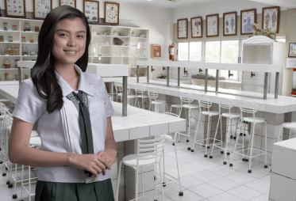

| UNDERGRADUATE EDUCATION |
 |
| Academic Programs College of Criminology, Arts, Sciences and Education (CCASE)
College of Customs Administration, Business Administration, Accountancy, Library and Information Science, Tourism Management, Computer Studies and Hospitality Management (CCBALTCH)
College of Health Science Education (CHSE)
Admission RequirementsOlivarez College is open to all students who meet its academic standards and are willing to commit themselves to the attainment of vision and mission of the institution as well as abide by the rules and directives of the College. The College Admission Committee sets guidelines to make sure that Olivarez College accepts only those who are likely to benefit most from the Olivarian education. To become validly enrolled, as a general rule, applicants should be duly registered and had submitted Form 138 or other similar transfer document and had made the required payment or arrangements for such payment at the Accounting Office.
Enrollment Procedure
ADMISSIONS OFFICE Ground Floor, Old High School Building, Olivarez College Dr. A. Santos Avenue, San Dionisio, Parañaque City, Philippines +632.8260750 local 283 www.olivarezcollege.edu.ph Fees and Payment
Tuition fees and other charges are computed on the basis of approved guidelines of the Commission on Higher Education (CHED) and payable upon admission of the students. All such fees must be paid in full whether or not the student continues his studies for the whole semester. When a student registers, it is understood that he is enrolling for the entire semester, and therefore, fees paid in cash or installment plan are non-refundable except when he drops his studies within fifteen (15) day from the opening of classes and regardless of actual attendance. No tuition fees will be reduced or refunded because of absences or suspension of classes. All financial matters specified by the Accounting Office are settled therein. Students may settle their financial responsibilities/obligation before taking the preliminary, mid-term and final examinations. The official examination permit slip issued by the Accounting Office is evidence that the students are cleared of financial responsibility. Payment made in check will not be considered official until said check is cleared with the bank concerned. Students who wish to continue his studies during the semester must notify the Registrar in writing within two (2) weeks from the beginning of classes. The cancellation shall take effect only upon receipt of his application for cancellation by the Registrar. Non- compliance with such requirements shall result in the forfeiture of the right to any refund of fees paid by him in accordance with Article XIII of the 1992 Manual of Regulations for Private Schools, to wit: “When a student registers in a school, it is understood that he is enrolling for the entire school year for elementary and secondary courses, and for the entire semester for collegiate courses.” (Section 62) “A student who transfer or otherwise withdraws in writing, within two weeks after the beginning of classes and who has already paid the pertinent tuition and other school fees in full or for any length longer than one month may be charged ten percent (10%) amount due for the term if he withdraws within the first week of classes, or twenty percent (20%) if within the second week of classes, regardless of whether or not he actually attended classes. The student may be charged all the school fees in full if he withdraws anytime after the second week of classes.” (Section 66) Students are granted transfer credentials/honorable dismissal when they withdraw in good moral standing. Any student wishing transfer credential must secure library, laboratory and accounts clearances and must pay in advance the fee/s to cover the charge in the presentation of his credentials and the forwarding of the transfer records to the institution in which he plans to enroll. A certificate of transfer credential cannot be released unless the original Form 137A or the transcript of record of the student previous school is on file with the Registrar’s Office. Students applying for the transcript of records for any purpose should file an application at least two (2) weeks before the time needed. The official transcript of records is sent upon the request of the school where the student has enrolled in. It must not be valid transfer credential. However, as attested by the Registrar, these are complete and accurate student records. No diploma or certificate of graduation can be released unless the student has completed all the academic requirements for his/her course and the special order for graduation has been issued by CHED. The College reserves the right to withhold report of grades, transcripts of record and diploma of graduation of any student who is financially delinquent or against whom the College holds a record of indebtedness until such indebtedness is paid. Students who are financially delinquent at the close of a semester will not be permitted to register for a succeeding semester unless his/her account is settled. COLLEGE OF CRIMINOLOGY, ARTS, SCIENCES AND EDUCATION Dean: Elmer B. De Leon, DEM Ground Floor, Pablo R. Olivarez Hall, Olivarez College Dr. Arcadio Santos Avenue, San Dionisio, Parañaque City, Philippines (632) 8260750 local 122 (Dean’s Office), 278 (Criminology), 136 (Liberal Arts), and 158 (Education) www.olivarezcollege.edu.ph COLLEGE OF CUSTOMS ADMINISTRATION, BUSINESS ADMINISTRATION, ACCOUNTANCY, TOURISM MANAGEMENT, COMPUTER STUDIES AND HOSPITALITY MANAGEMENT Dean: Antonio O. Yu, DBA, CPA Second Floor, Pablo R. Olivarez Hall, Olivarez College Dr. Arcadio Santos Avenue, San Dionisio, Parañaque City, Philippines (632) 8260750 local 113 (Dean’s Office, Accountancy, Business and Customs Administration), 114 (Computer Studies), and 275 (Hospitality and Tourism Management) www.olivarezcollege.edu.ph COLLEGE OF HEALTH SCIENCE EDUCATION Dean: Cynthia R. Acosta, RN, MAN Third Floor, Pablo R. Olivarez Hall, Olivarez College Dr. Arcadio Santos Avenue, San Dionisio, Parañaque City, Philippines (632) 8260750 local 112 (Dean’s Office and Nursing) and 155 (Physical Therapy and Radiologic Technology) www.olivarezcollege.edu.ph |
|
CONTACT US |
|
OLIVAREZ COLLEGE pr.olivarezcollege@gmail.com Contact Number 8825-71-19 Dr. Arcadio Santos Avenue, San Dionisio, Parañaque, Metro Manila, Philippines +632.8260750 contactus@olivarezcollege.edu.ph Olivarez College. Copyright 2024. All rights reserved. |